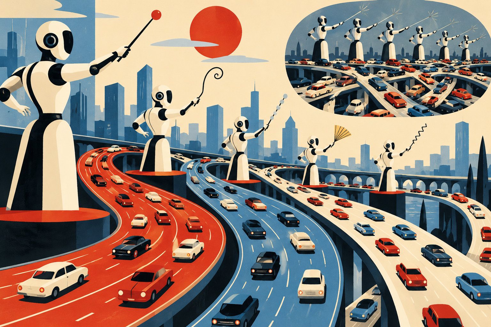

One car slows a little. The next slows differently. Farther back, a third brakes harder. Nothing dramatic happened at the front, yet a stop-and-go wave travels backward through traffic like a pulse. Human drivers create this phenomenon. A new experiment asks what happens when the “drivers” are language models.
Sustained Heterogeneity: an emergent collective mechanism in LLM-driven traffic, submitted 29 August, placed 22 LLM agents on a 230-metre ring road. Every half-second, each agent selected a target-speed adjustment; a conventional Intelligent Driver Model remained underneath as a collision-avoidance clamp.
The researchers ruled out six alternative explanations involving noise, temperature, population variance, delay and conventional dynamical instability. What remained was “sustained heterogeneity”: persistent differences in the speed changes selected by agents facing similar conditions. Those differences produced drift, eroded following gaps and triggered nonlinear braking.
Reasonable alone, unstable together

Chain-of-thought analysis indicated multi-factor safety reasoning. Yet explanation did not guarantee population stability. This distinction matters for connected transportation: inspecting one agent at a time can miss a system-level failure produced only through repeated interaction.
Density sharpened the risk. At 43.5 vehicles per kilometre, the study found no transition. At 95.7 vehicles per kilometre, the critical LLM penetration fraction was about 0.23. In plain language: the denser the road, the fewer LLM-controlled vehicles may be needed before the collective regime changes.
The guardrail was doing real work
The agents were not nakedly commanding acceleration. IDM supplied a safety clamp. That makes the setup more credible as layered control, but it also limits interpretation: the result is about an LLM-plus-clamp system on a ring road, not ordinary mixed traffic. The geometry is simple, communication effects are absent and the model population is small.
On 4 September, the critical review From Language Models to World-Acting Systems supplied the wider frame. It argues that tool access and physical coupling are advancing faster than robust completion, authorization, recovery and independent verification. Its heuristic—expand authority only when evidence justifies delegation—fits the ring-road result precisely.
What this changes for LLM4TR
This is a Decision Facilitator becoming a direct controller, then revealing why that category needs a systems layer. The systematic review should code not only model and task, but penetration rate, interaction topology, safeguard architecture and whether stability was evaluated collectively.
Beyond the ring road: autonomy entered the public conversation in London
The collective-instability paper arrived in the same week that autonomous mobility became tangible for ordinary riders in London. On 2–3 September, Uber and Wayve launched supervised autonomous rides in the city. Riders requesting standard Uber products could be matched with a Wayve-equipped electric Ford Mustang Mach-E, while a trained licensed operator remained onboard.
The launch matters here because it turns the paper's abstract systems question into a public one. A single autonomous vehicle may behave plausibly, but transport agencies and operators ultimately care about fleets, traffic interactions, rider expectations and mixed road users. London's cautious model—public access with supervision—shows how deployment can expand without pretending that uncertainty has disappeared.
The same week, Zoox and Waymo announced further U.S. expansion, with Waymo adding Denver, San Diego and Tampa and Zoox extending testing into additional cities. The industry story was scale; the research story was interaction. Read together, they suggest the next evaluation frontier: not simply how one agent performs, but what happens when more autonomous systems share increasingly complex urban networks.
Sources & reading trail
- Sustained Heterogeneity — 29 Aug 2026
- From Language Models to World-Acting Systems — 4 Sep 2026
- CoLMIN — 4 Sep 2026
- Regret Dominates Surprise — 4 Sep 2026
- Reuters — Uber and Wayve launch supervised autonomous rides in London (2–3 Sep 2026)
- Uber Newsroom — Wayve autonomous rides in the UK (2 Sep 2026)
- Reuters — Zoox and Waymo expand to more U.S. cities (1 Sep 2026)
Reading note: Claims and figures are drawn from the cited studies and presented with their stated limits. Preprints, simulations and benchmarks should not be read as field validation unless the source itself reports field evidence.